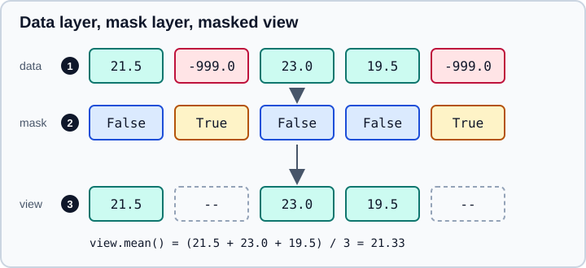

Masked Arrays
|
This content was generated with the assistance of AI and should be verified against the official documentation before being relied on in production. |
Real datasets are full of values that exist in the file but must not take part in a calculation: sensor readings flagged
as invalid, a sentinel such as -999 for "not measured", NaN from a failed conversion, cells outside a region of
interest. NumPy’s numpy.ma module handles this with the masked array: an ordinary array of data paired with a
Boolean mask of the same shape. Wherever the mask is True the element is "masked", and operations behave as if the
element were not there.
This page targets NumPy 2.5, as checked against the official documentation in October 2026. Examples target Python 3.13 or 3.14 and were run on Python 3.13. Every code block was run with NumPy 2.5.4 and the printed output is real. Related pages in this part: NumPy overview, Reductions & Axis Semantics, Floating-Point Errors & errstate, Statistics & Histograms and Copies & Views. For the pandas approach to the same problem (missing values inside Series and DataFrames), see Missing Data and Data Cleaning.
The model: data, mask and view

In the figure, marker 1 is the data layer: the original values, including the sentinel -999.0, are never
modified by masking. Marker 2 is the mask layer, True where the element is invalid. Marker 3 is the view the
operations see: masked elements display as --, and a statistic such as the mean uses only the valid ones.
Because the data is kept, masking is reversible (you can unmask an element and get the original value back), and the
mask can be shared or combined cheaply. The price is that every operation has to consult the mask, so masked arrays are
slower than plain arrays and only the functions in numpy.ma and the methods of MaskedArray are guaranteed to respect
the mask.
Creating masked arrays
The most direct way is to pass a Boolean mask. In practice the mask is usually derived from the data with one of the
masked_* helper functions.
import numpy as np
import numpy.ma as ma
x = np.array([1.0, -999.0, 3.0, 4.0, -999.0])
m = ma.masked_values(x, -999.0) # sentinel -> masked
print(m)
print(m.mask, m.fill_value)
print(m.mean(), m.sum(), m.count(), m.size)
print(x.mean()) # the plain array treats -999 as data[1.0 -- 3.0 4.0 --] [False True False False True] -999.0 2.6666666666666665 8.0 3 5 -398.0
Source: The numpy.ma module
ma.masked_values(x, value) masks entries that are close to value (it uses isclose for floating-point data, so it is
the right choice for floating-point sentinels, and exact equality for integer types), while ma.masked_equal always
uses exact equality. The plain array
x shows why masking matters: its mean, -398.0, silently includes the sentinels.
| Function | Masks |
|---|---|
|
Wherever the Boolean |
|
Entries approximately (or exactly) equal to |
|
NaN and infinite entries |
|
Wherever the Boolean array |
|
Entries compared with a scalar |
|
Entries inside or outside a closed interval |
|
Entries equal to |
print(ma.masked_array([1, 2, 3], mask=[0, 1, 0]))
print(ma.masked_invalid(np.array([1.0, np.nan, np.inf, 2.0])))
print(ma.masked_where(np.array([5, 1, 7]) > 4, np.array([10, 20, 30])))
print(ma.masked_greater([1, 5, 9], 4))
print(ma.masked_less_equal([1, 5, 9], 5))
print(ma.masked_inside([1, 5, 9], 2, 6))
print(ma.masked_outside([1, 5, 9], 2, 6))
print(ma.masked_equal([1, 2, 1], 1))[1 -- 3] [1.0 -- -- 2.0] [-- 20 --] [1 -- --] [-- -- 9] [1 -- 9] [-- 5 --] [-- 2 --]
Source: The numpy.ma module
Both ma.masked_array and ma.array accept mask=, fill_value=, copy=, keep_mask=, hard_mask= and shrink=.
Pass dtype= as for ordinary arrays. The plain constructor np.ma.MaskedArray(...) is the class behind both.
Working with the mask
A masked array without any masked element stores a special ma.nomask value (it prints as False) instead of a full
Boolean array, to save memory. Use ma.getmaskarray(a) when you need a real Boolean array of the right shape, and
ma.getmask(a) to see what is stored. ma.is_masked(a) tells you whether any element is masked.
a = ma.array([1, 2, 3, 4])
print(a.mask, ma.is_masked(a), ma.getmaskarray(a))
a[1] = ma.masked # mask one element
print(a, a.mask)
a[1] = 20 # soft mask: assigning unmasks
print(a, a.mask)
b = ma.array([1, 2, 3, 4], mask=[0, 1, 0, 0], hard_mask=True)
b[1] = 99 # hard mask: assignment is ignored
print(b, b.hardmask)
b.soften_mask()
b[1] = 99
print(b)False False [False False False False] [1 -- 3 4] [False True False False] [1 20 3 4] [False False False False] [1 -- 3 4] True [1 99 3 4]
Source: The numpy.ma module
Assigning the constant ma.masked masks an element. By default the mask is soft: assigning an ordinary value to a
masked element unmasks it. A hard mask (hard_mask=True, or a.harden_mask()) ignores such assignments so that an
invalid cell can never be overwritten by accident, and a.soften_mask() returns to the default.
The mask and the data are exposed as attributes: a.mask (the mask), a.data (the underlying array, including values
under the mask), a.fill_value and a.hardmask. Assigning to a.mask changes which elements are valid.
Getting values out: filled and compressed
Plain NumPy functions and other libraries do not understand masks, so at some point you convert. There are two ways.
c = ma.array([1, 2, 3], mask=[0, 1, 0])
print(c.data) # the stored values, masked or not
print(c.filled(0)) # replace masked entries
print(c.filled()) # default fill value for the dtype
print(c.compressed()) # only the valid values, as a plain 1-D array
d = ma.array([1.5, 2.5, 3.5], mask=[0, 1, 0])
print(d.filled(np.nan), d.fill_value)[1 2 3] [1 0 3] [ 1 999999 3] [1 3] [1.5 nan 3.5] 1e+20
Source: The numpy.ma module
-
a.filled(v)returns a plainndarrayof the original shape with masked entries replaced byv. Without an argument it usesa.fill_value, whose default depends on the dtype (999999for integers and1e+20for floats) and is easy to forget; set it withma.set_fill_value, thefill_value=argument or an explicitfilled(v). Filling an integer array withnp.nanis impossible, so cast first withastype(float), as in the structured example near the end. -
a.compressed()returns a 1-D plain array of the valid elements only; the shape is lost.
Arithmetic and functions
Operations between masked arrays produce a result masked wherever either input is masked, and numpy.ma also masks
results that are mathematically invalid. A division by zero or the square root of a negative number yields a masked
element, not inf or nan.
e = ma.array([1, 2, 3], mask=[0, 1, 0])
f = ma.array([10, 20, 30], mask=[0, 0, 1])
print(e + f) # masks are combined
print(ma.array([1.0, 0.0, 2.0]) / ma.array([1.0, 0.0, 1.0])) # 0/0 masked
print(ma.sqrt(ma.array([4.0, -1.0, 9.0]))) # invalid domain masked
print(np.sqrt(ma.array([4.0, -1.0, 9.0]))) # np ufuncs dispatch too
print(ma.log(ma.array([1.0, 0.0, np.e])))
print(c == 2)[11 -- --] [1.0 -- 2.0] [2.0 -- 3.0] [2.0 -- 3.0] [0.0 -- 1.0] [False -- False]
Source: The numpy.ma module
NumPy ufuncs applied to a masked array dispatch to the masked version, so np.sqrt and np.add also return masked
arrays. One visible difference remains: np.sqrt(ma.array([4.0, -1.0, 9.0])) computes the invalid value first and emits a
RuntimeWarning ("invalid value encountered in sqrt") before masking it, while ma.sqrt masks it quietly. Prefer the
ma functions (ma.sqrt, ma.log, ma.divide) when invalid entries are expected. For control of floating-point warnings in
general see Floating-Point Errors & errstate.
Comparison operators return masked Boolean arrays, so c == 2 is [False — False]: the masked element is neither true
nor false. Using such a result as a Boolean index selects only the elements that are valid and true, but an if on a
masked array raises like any other multi-element array. Functions ma.allequal and ma.allclose ignore masked entries by
default.
Reductions, statistics and sorting
Methods such as sum, mean, std, var, min, max, prod, cumsum and count skip masked elements, and
ma.median, ma.average and ma.anom are provided as functions. a.count() is the number of valid elements, while
a.size is the total.
temps = ma.masked_values([21.5, -999.0, 23.0, 19.5, -999.0, 22.0], -999.0)
print(repr(temps))
print(temps.mean(), temps.std(), temps.min(), temps.max(), ma.median(temps))
print(ma.average(temps, weights=[1, 1, 2, 1, 1, 1]))
print(temps.anom())
print(np.cumsum(temps))
g = ma.array([[1, 2], [3, 4]], mask=[[0, 1], [0, 0]])
print(g.sum(axis=0), g.mean(axis=1), g.count(axis=0))
print(ma.array([[1, 2], [3, 4]], mask=[[1, 1], [0, 0]]).sum(axis=1))
print(np.mean(np.array([21.5, np.nan, 23.0])), np.nanmean(np.array([21.5, np.nan, 23.0])))masked_array(data=[21.5, --, 23.0, 19.5, --, 22.0],
mask=[False, True, False, False, True, False],
fill_value=-999.0)
21.5 1.2747548783981961 19.5 23.0 21.75
21.8
[0.0 -- 1.5 -2.0 -- 0.5]
[21.5 -- 44.5 64.0 -- 86.0]
[4 4] [1.0 3.5] [2 1]
[-- 7]
nan 22.25
Source: The numpy.ma module
If every element along an axis is masked, the result for that position is masked (the second example,
[-- 7]). np.nanmean is the plain-array alternative for NaN specifically: it ignores NaN but not sentinels, and it
cannot represent "unknown" as a mask that survives across several operations.
Sorting puts masked elements at the end by default (endwith=True), and ma.sort(..., endwith=False) puts them first.
s = ma.array([3, 1, 2], mask=[0, 1, 0])
print(np.sort(s))
print(ma.sort(s, endwith=False))
print(s.argsort())
print(ma.unique(ma.array([1, 1, 2, 3], mask=[0, 0, 0, 1])))[2 3 --] [-- 2 3] [2 0 1] [1 2 --]
Source: The numpy.ma module
Saving masked arrays
np.save cannot write a masked array. It calls MaskedArray.tofile, which is not implemented and raises
NotImplementedError, and by then the .npy header has already been written, so a truncated file is left behind.
np.savez does not raise, but it drops the mask silently and the file loads back as a plain array of the underlying
data. Store the data and the mask as two plain arrays in one .npz file and rebuild the masked array after loading, or
use pickle for files that only you will read back:
import pickle
t = ma.masked_array([1.0, 2.0, 3.0], mask=[False, True, False], fill_value=-999.0)
try:
np.save("t.npy", t)
except NotImplementedError as e:
print("NotImplementedError:", e)
np.savez("t.npz", data=t.data, mask=ma.getmaskarray(t), fill_value=t.fill_value)
with np.load("t.npz") as f:
back = ma.masked_array(f["data"], mask=f["mask"], fill_value=f["fill_value"])
print(back, back.fill_value)
with open("t.pkl", "wb") as fh:
pickle.dump(t, fh)
with open("t.pkl", "rb") as fh:
print(pickle.load(fh))NotImplementedError: MaskedArray.tofile() not implemented yet. [1.0 -- 3.0] -999.0 [1.0 -- 3.0]
Use ma.getmaskarray rather than t.mask, because the mask can be the single value nomask when nothing is masked.
t.filled(np.nan) followed by np.save also works for floating-point data, but it merges masked and NaN values when
the file is read back. Unpickling runs code, so do not load pickles from untrusted sources (see
Reading & Writing Files).
Source: numpy.ma.MaskedArray.tofile, numpy.savez and numpy.ma.getmaskarray
Masked arrays or NaN, or pandas?
| Approach | Strengths | Limits |
|---|---|---|
|
Fast, simple, no extra type; works with plain arrays everywhere |
Floating-point only; cannot mark an integer or string element invalid; NaN also arises from computation, so "missing" and "invalid" are mixed |
|
Works for every dtype, keeps the original value, supports soft and hard masks, shares masks between arrays |
Slower; the mask is lost in many conversions; fewer libraries understand it |
pandas missing values |
Labels, nullable dtypes, group-by, joins and I/O handle missing values |
A separate type system; see Missing Data |
Use a masked array for gridded or physical data with sentinels or quality flags (climate, imaging, instruments) and when you must compute with the mask in array form. Use NaN for floating-point data that you will pass to many NumPy and SciPy functions. Use pandas when the data is tabular and labelled. Matplotlib and several scientific file readers also accept masked arrays and leave masked points unplotted or unread.
Pitfalls
s = ma.array([1, 2, 3], mask=[0, 1, 0])
print(np.asarray(s)) # the mask is dropped
print(np.array(s))
m0 = np.array([False, True, False])
s3 = ma.array([1, 2, 3], mask=m0) # shares the mask array
s3[0] = ma.masked
print(m0)
m1 = np.array([False, True, False])
s4 = ma.array([1, 2, 3], mask=m1, copy=True)
s4[0] = ma.masked
print(m1, s4.mask)
v = temps[1:4] # a slice is a view, mask included
print(v, v.mask)[1 2 3] [1 2 3] [ True True False] [False True False] [ True True False] [-- 23.0 19.5] [ True False False]
Source: The numpy.ma module
-
np.asarrayandnp.arraydrop the mask. The first two lines show[1 2 3]: the masked value reappears as the data stored under the mask. Usema.getdata,filledorcompresseddeliberately, andnp.ma.asarraywhen you want to keep a mask. -
A mask array passed in is shared by default. Masking
s3[0]also changedm0, which is the caller’s array. Passcopy=True(as fors4) or build the mask fresh. -
Slices are views. The slice keeps the corresponding part of the mask and shares memory with the original.
-
Most
np.*functions outsidenumpy.maignore the mask, because they treat the object as an array of data. Check the documentation of a function before using it on a masked array, and test on a small example. -
fill_valuesurprises: the default999999or1e+20can end up in saved files if you callfilled()without thinking. -
Soft masks unmask on assignment; use a hard mask when that would be a bug.
-
a.maskmay beFalserather than an array when nothing is masked; usema.getmaskarray.
Putting it together
data = ma.masked_invalid(np.array([[1.0, np.nan], [3.0, 4.0], [5.0, np.nan]]))
print(data.mean(axis=0), data.count(axis=0))
print(ma.array(["a", "b"], mask=[0, 1]))
print(ma.array([1, 2, 3], mask=[0, 1, 0]).astype("float64").filled(np.nan))[3.0 4.0] [3 1] ['a' --] [ 1. nan 3.]
Source: The numpy.ma module
Column means over data with ragged missing entries need no loop: data.mean(axis=0) averages each column over its valid
cells only and data.count(axis=0) reports how many cells each used.